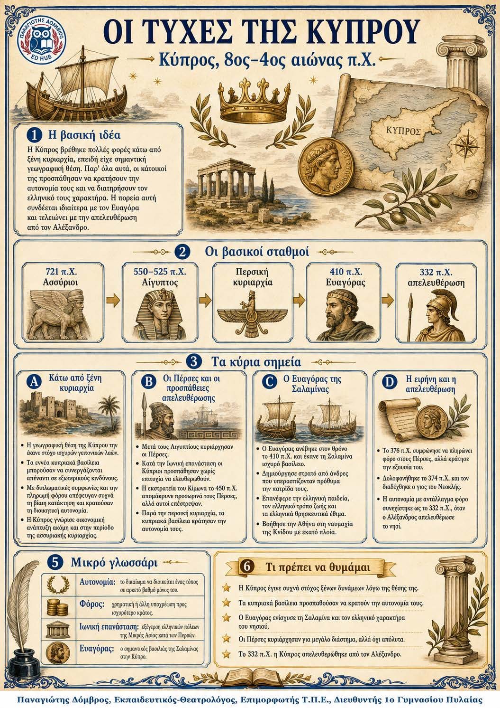

Πληροφοριογράφημα ενότητας
Το πληροφοριογράφημα αυτής της ενότητας δεν έχει ανέβει ακόμη. Οι σημειώσεις παραμένουν πλήρως διαθέσιμες.

Κύπρος, 8ος-4ος αιώνας π.Χ.
Η Κύπρος βρισκόταν μακριά από την υπόλοιπη Ελλάδα και συχνά πέρασε κάτω από ξένη κυριαρχία. Παρότι ήταν χωρισμένη σε εννέα βασίλεια, διατήρησε συχνά την αυτονομία της με διπλωματία και φόρους. Ο Ευαγόρας ενίσχυσε τη Σαλαμίνα και το ελληνικό στοιχείο. Το 332 π.Χ. ο Αλέξανδρος απελευθέρωσε το νησί από τους Πέρσες.
